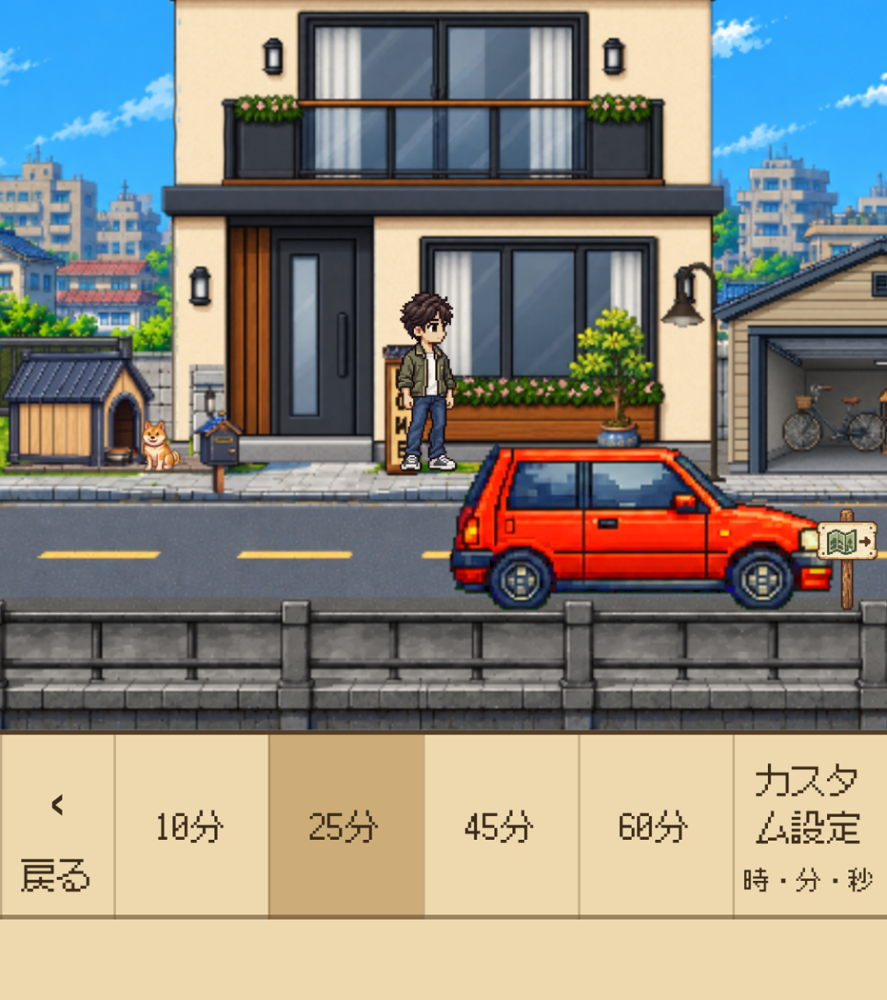
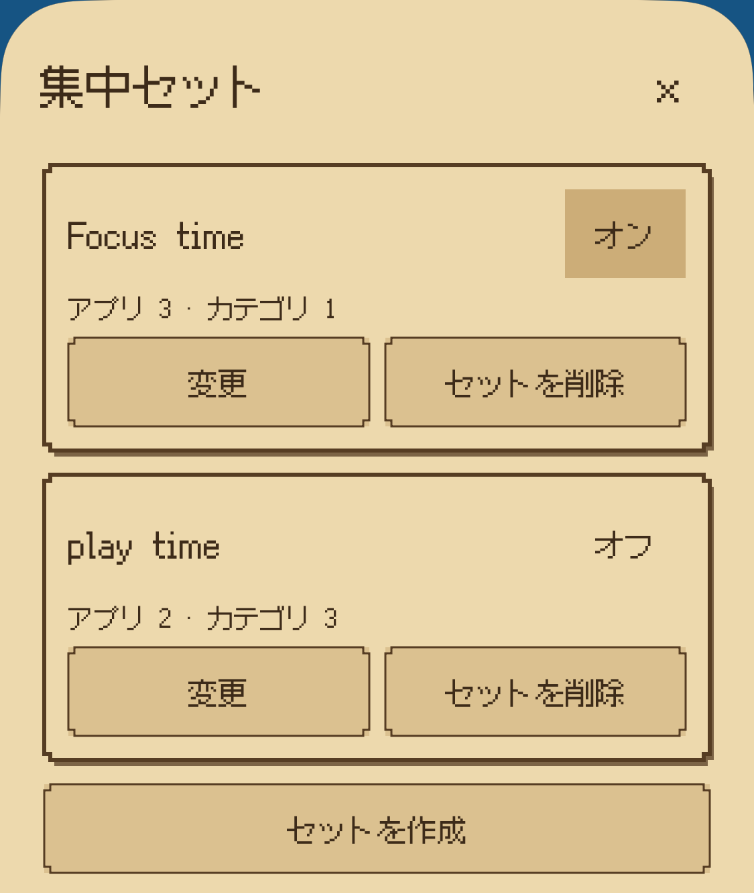
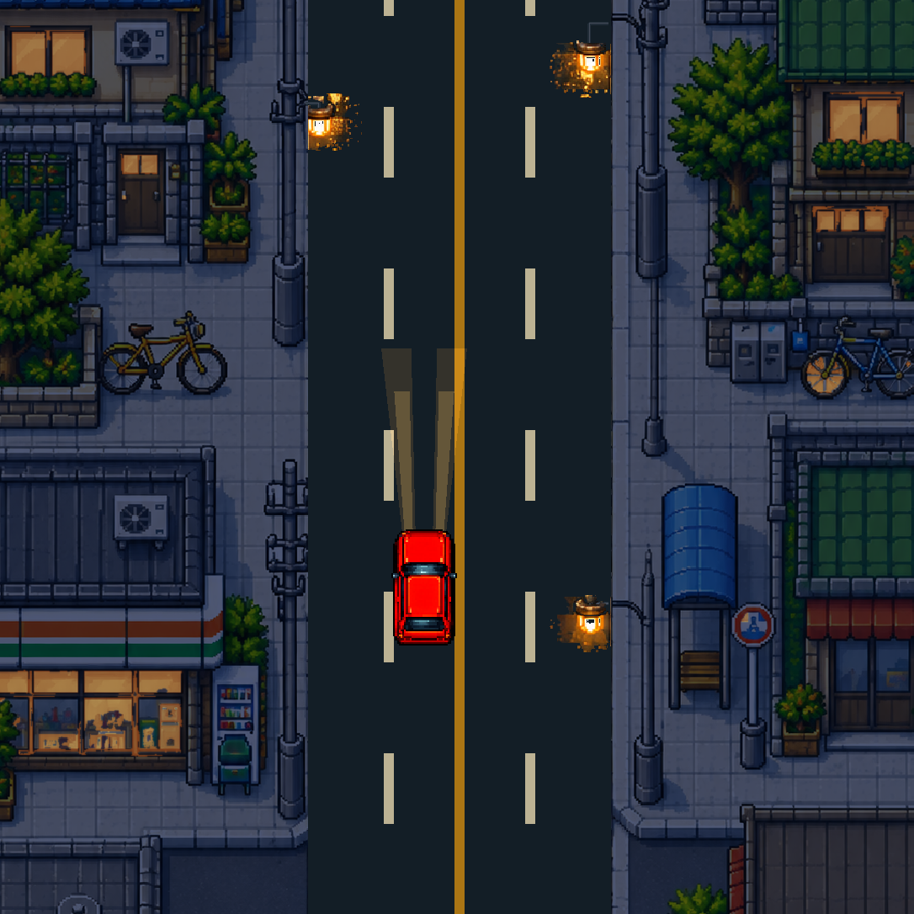
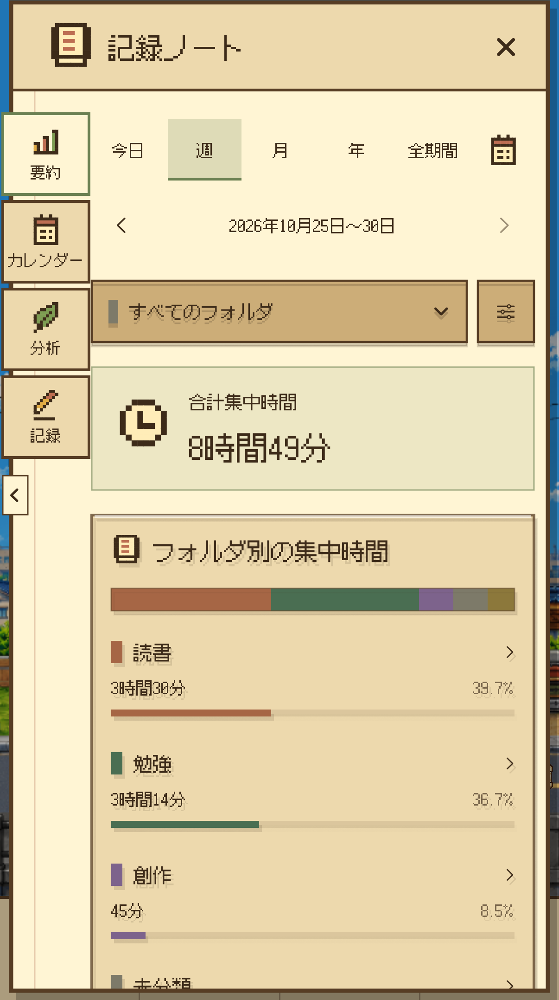
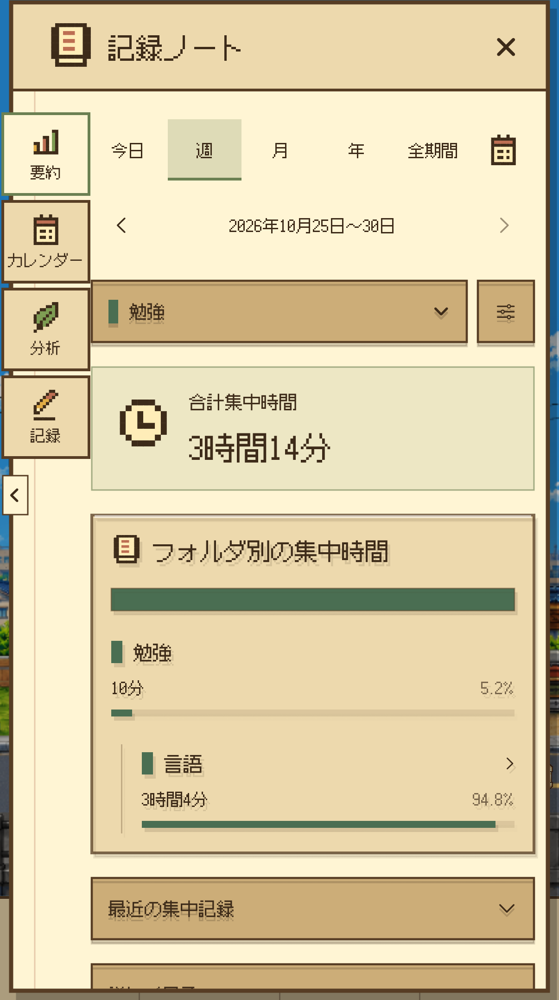
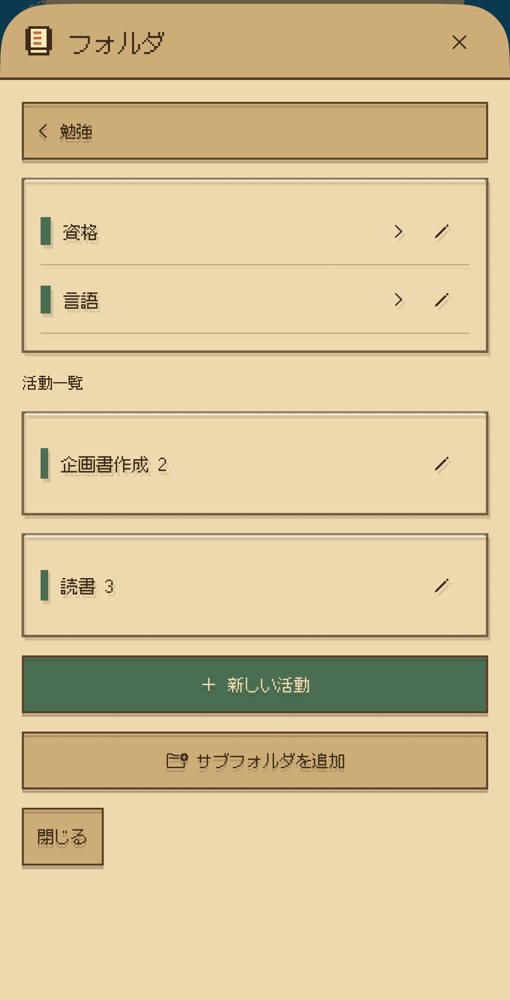
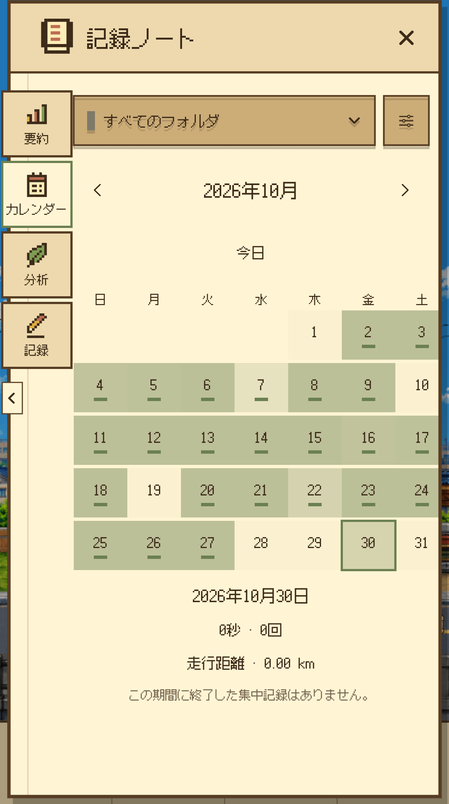
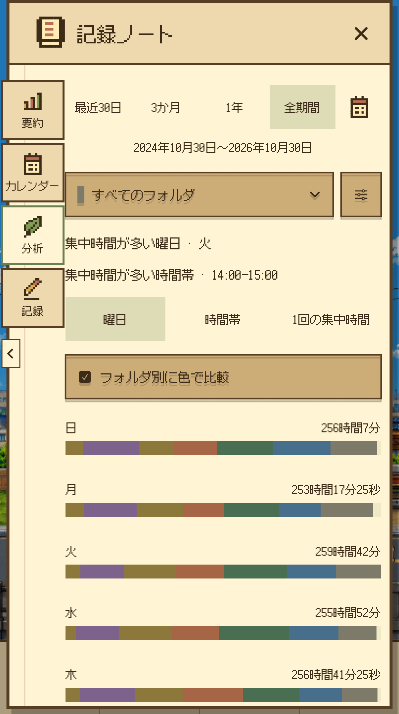
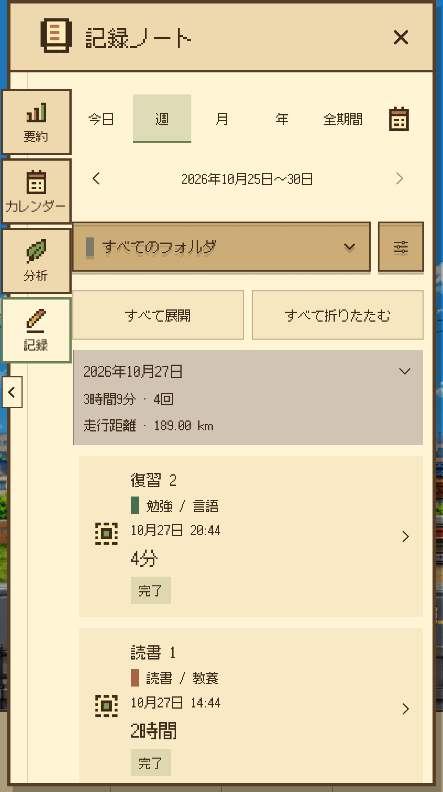

今日の集中を準備
プリセットや直接設定で時間を決め、取り組む活動を選びます。必要なときは一時停止し、再開できます。
集中を記録して、自分だけの世界を育てるタイマー
タイマーをつけたら、小さな旅の始まり。
集中した時間は記録ノートに残り、
自分だけのHomeを育てる力になります。
目の前のことに向き合った時間は記録になり、目に見える成長につながります。また戻って集中したくなる、小さなきっかけを。
01 / FOCUS & DRIVE
勉強、読書、作業。時間を決めると、車がピクセルの街を走り始めます。景色に寄り添われながら、自分のやることに集中しましょう。
プリセットや直接設定で時間を決め、取り組む活動を選びます。必要なときは一時停止し、再開できます。
Focus Lockで選んだアプリ・カテゴリをブロック。ロック画面のLive Activityで残り時間を確認し、完了通知で区切りをつけられます。
自動走行・手動操作、Top View・Side View、昼・夕方、晴れ・雨。走行速度も好みに合わせて選べます。

画面を大きく見る
画面を大きく見る
画面を大きく見る02 / FOCUS JOURNAL
記録ノートは、自分の集中を振り返る場所。勉強や作業をフォルダで整理して、自分に合う集中のリズムを見つけましょう。 Homeの1段階でポストを解放すると、記録ノートを開けます。

画面を大きく見るFOCUS JOURNAL / 01
日・週・月・年・全期間・指定期間で集中時間を振り返れます。最近のセッションや詳しい統計は、必要なときに開いて確認。
実際のアプリ画面 · 記録は撮影用のサンプルデータです。

画面を大きく見るFOCUS JOURNAL / 02
勉強、仕事、個人プロジェクト。フォルダとサブフォルダに積み重ねた時間を比較し、選んだフォルダの記録を詳しく見られます。
実際のアプリ画面 · 記録は撮影用のサンプルデータです。

画面を大きく見るFOCUS JOURNAL / 03
よく取り組む活動を保存して、最近使った活動やお気に入りから選択。フォルダとサブフォルダで整理すれば、次の集中も気軽に始められます。
実際のアプリ画面 · 記録は撮影用のサンプルデータです。

画面を大きく見るFOCUS JOURNAL / 04
いつ、どれだけ集中したかをカレンダーで確認。日付を選んでその日のセッションを見返し、自分のペースで続けましょう。
実際のアプリ画面 · 記録は撮影用のサンプルデータです。

画面を大きく見るFOCUS JOURNAL / 05
集中時間の変化や完了回数を確認し、曜日・時間帯・集中の長さごとの傾向を比較。次の集中を計画するヒントに。
実際のアプリ画面 · 記録は撮影用のサンプルデータです。

画面を大きく見るFOCUS JOURNAL / 06
期間やフォルダでセッションを探し、詳細を確認できます。活動名やフォルダを編集して、後から見返しやすい記録に。
実際のアプリ画面 · 記録は撮影用のサンプルデータです。
03 / MAKE IT YOUR HOME
小さな始まりから、帰りたくなる場所へ。Homeの0段階から35段階まで、一回の集中が自分だけの世界に少しずつ残ります。


累計25分の集中 → Stamp 1個 → Stampを使ってHomeを成長各段階に必要なStampを集め、自分で使うと次の段階が開きます。貯めるだけでは自動解放されません。Free Driveに集中報酬はありません。
現在の日本Homeを35段階まで完成させると、この地域の残りのStampとStamp獲得用の繰り越し時間は0になり、追加のStamp獲得は終了します。集中時間・セッション記録・バッジは引き続き積み重なります。
成長とともに広がる小さな選択。アバター、車、表札に自分の好みを添えましょう。
性別・肌・髪型・服を選んで、自分だけのアバターに。
赤い車と白い車から選び、Homeとドライブに反映できます。
Homeに自分の名前を飾りましょう。
04 / A MOMENT TO UNWIND
カフェに着いたら休憩タイマーをつけて、ひと休み。オリジナル音楽や環境音、小さな効果音まで好みに合わせて調整し、ゆったりとした時間を楽しみましょう。

05 / YOUR TIME, KEPT CLOSE
個人のiCloudで集中の記録とHomeの成長を同期できます。
ファイルへ保存して読み込めます。購入の復元と記録の復元は別の操作です。
日本語・韓国語・英語で、自分だけの旅を続けましょう。
06 / FREE TO WANDER
Free Drive
Free Driveは、時間制限なしで景色を楽しめる自由走行です。
Focus Drive Pass
日本エリアのFocus Driveを、実際の集中時間の累計75分まで無料で体験できます。その後はFocus Drive Passを一度購入すれば、引き続き利用できます。
現在のFocus Drive Passは日本エリアのFocus Driveに適用されます。追加エリアはまだ利用できず、今後リリースされる場合は別途購入が必要になる可能性があります。
DAYROAD / APP PREVIEW
実際のアプリ画面でDayroadの雰囲気をご覧ください。音声は再生後にオンにできます。
25 SEC / JA
07 / BEFORE YOU GO
現在のApp Storeの互換性表示では、iOS 17.0以降のiPhoneに対応しています。アプリの言語は日本語・韓国語・英語です。最新のインストール可否はApp Storeでご確認ください。
いいえ。Focus Drive Passは自分で選んで購入する買い切り商品です。サブスクリプション・自動更新・体験後の自動課金はありません。Free Driveは引き続き無料です。
実際の集中時間が累計25分になるごとにStampを1個獲得。各段階に必要なStampを自分で使うとHomeが成長し、車は2段階、アバターは3段階、表札は5段階で開きます。Free Driveに集中報酬はありません。 犬とはHomeの6段階で出会えます。旅の地図帳では、現在の日本エリアとHomeの成長の道のりを確認できます。
パスは購入時のAppleアカウントで購入を復元できます。記録・Stamp・Homeは個人のiCloud同期やJSONバックアップで別途復元します。機種変更前に記録をバックアップしてください。
App Storeで配信中
集中を記録して、小さな世界を育てましょう。
iPhone · iOS 17以降